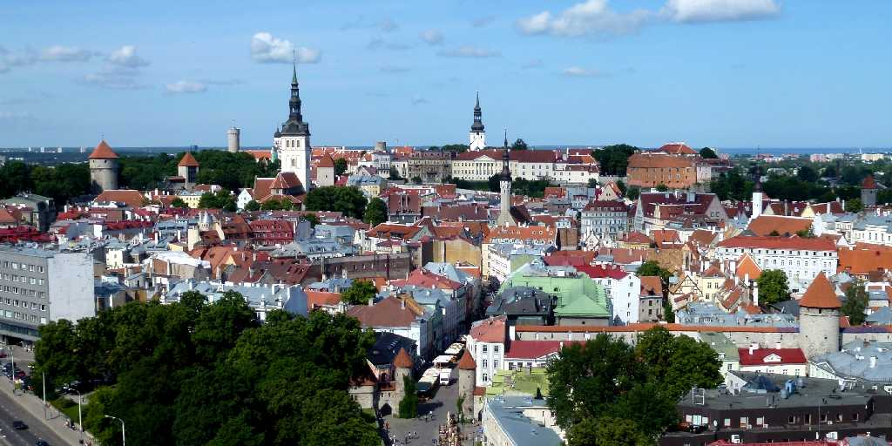
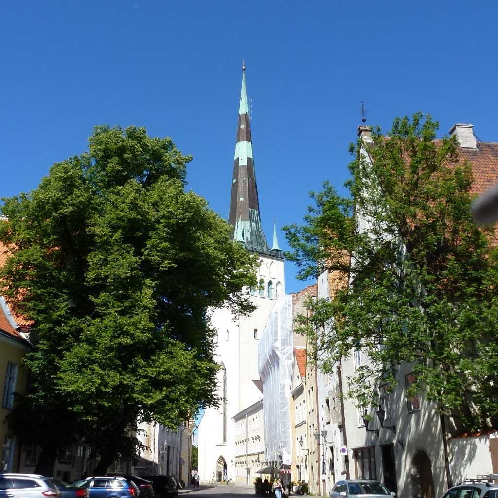
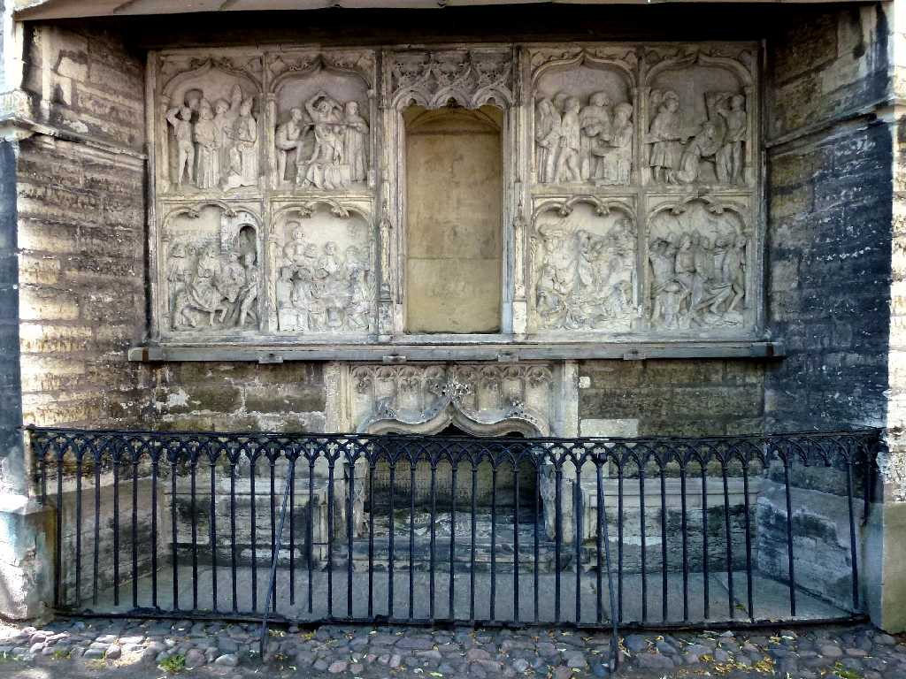
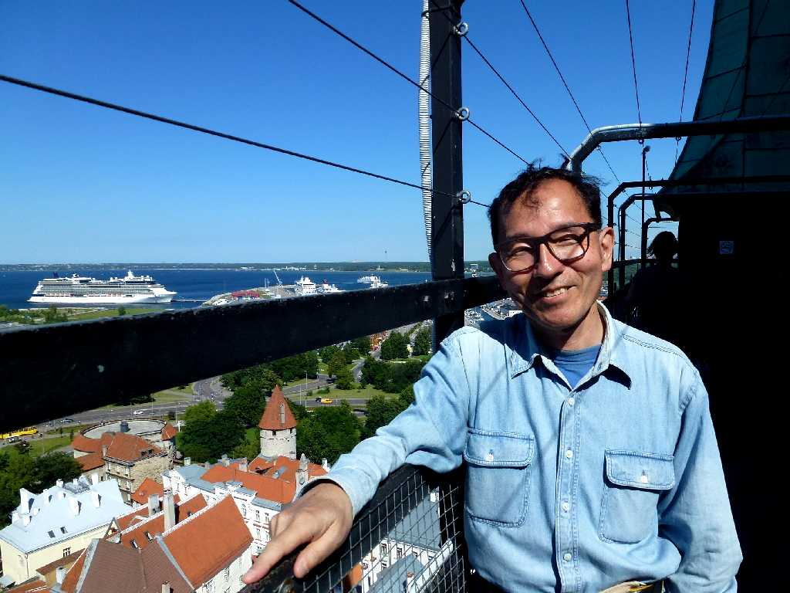

Historic Center of Tallinn from Sokos
タリン旧市街は１０５０年にトームペア(ドイツ語で聖堂の立つ丘を意味する)と呼ばれる中心部の丘に要塞が築かれて以来１３世紀にはドイツ騎士団や北方十字軍の軍事拠点となりロシアとスカンジナビアを結ぶ貿易中継地として繁栄した
 
St. Olav Church St. Olav Tomb
聖オレフ教会は１５世紀のノルウェーの守護聖人オレフ王を祀った教会で尖塔は高さ１２４ｍありタリン旧市街で最も高く旧市街を一望できる １５４９年の完成当時は１５９ｍあり世界一高い建築物であったが１６２５年のストラスブール大聖堂の完成によりその座を譲った

July 2 2012 St. Olav Church Tallinn
リトアニアのビルニュスからラトビアのリガを通りエストニアのタリンまでのバルト三国１,５００ｋｍバスの旅でタリンに到着